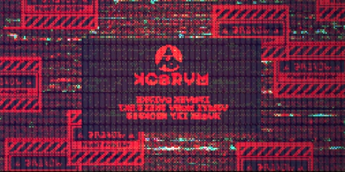

CON EL PASO DE LOS AÑOS, LA PROSPERIDAD LLEGÓ A ALTERNA Y SU POBLACIÓN AUMENTÓ CUAL MAREA EN ASCENSO. LOS CIENTÍFICOS QUE ENCABEZABAN ESTOS GRANDES AVANCES, YA ANCIANOS, CONSIDERARON QUE NADA MÁS PODÍAN HACER POR LA CIVILIZACIÓN DE ALTERNA. ASÍ QUE SE DISPUSIERON A ELEGIR NUEVOS LÍDERES PARA QUE OCUPARAN SU LUGAR AL FRENTE DEL MUNDO RECONSTRUIDO. SUS JÓVENES SUCESORES HEREDARON DE ELLOS NO SOLO SU GENIALIDAD, SINO TAMBIÉN SU ENORME AFÁN DE INNOVACIÓN. ESTA NUEVA GENERACIÓN, NACIDA Y EDUCADA EN LAS PROFUNDIDADES DE ALTERNA, DEMOSTRARÍA ESTAR TOTALMENTE A LA ALTURA DE SUS ANTECESORES. NO TARDÓ EN LLEGAR EL DÍA EN QUE, CANSADOS DE MIRAR EL MANTO DE CRISTALES LÍQUIDOS SOBRE SUS CABEZAS, SE OBSESIONARON CON PODER CONTEMPLAR EL VERDADERO CIELO DEL EXTERIOR.

LOS ANCIANOS EN LUGAR, AQUELLOS QUE EN EL PASADO HABÍAN LOGRADO HUIR DE LA DEVASTACIÓN DE LA SUPERFICIE, INTENTARON CON VEHEMENCIA HACERLOS DESISTIR DE ESA IDEA. SIN EMBARGO, PESE A LA OPOSICIÓN DE LOS VIEJOS CIENTÍFICOS, LOS JÓVENES PROSIGUIERON CON SUS PLANES Y CONSTRUYERON UN GIGANTESCO COHETE. HASTA QUE UN DÍA, AL EFECTUAR UNA PRUEBA DE FUNCIONAMIENTO DE LOS PROPULSORES DEL COHETE, SUCEDIÓ LA TRAGEDIA. LA ENERGÍA LIBERADA POR LOS PROPULSORES ALCANZÓ LOS CRISTALES LÍQUIDOS QUE RECUBRÍAN ALTERNA Y SE PRODUJO UNA VIOLENTA REACCIÓN. DEBIDO A ESTA REACCIÓN, LAS ROCAS DE LOS MUROS INTERIORES DE ALTERNA SE DERRUMBARON SOBRE LA GENTE SIN PREVIO AVISO. ESTO SUPUSO EL FIN DE ALTERNA, EL ÚLTIMO VESTIGIO DE LA CIVILIZACIÓN DE LA OTRORA PRÓSPERA HUMANIDAD. ESTA VEZ, NINGUNO DE SUS MIEMBROS PUDO SOBREVIVIR POR MUCHO TIEMPO.
